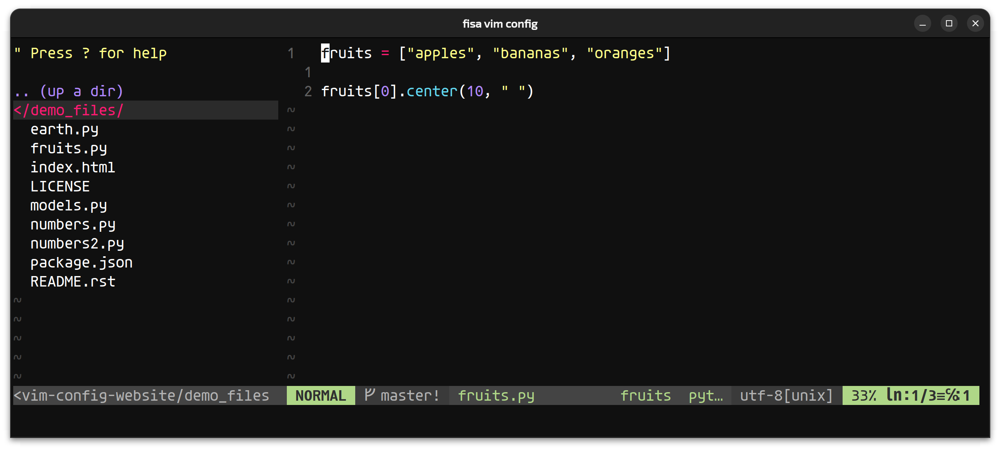
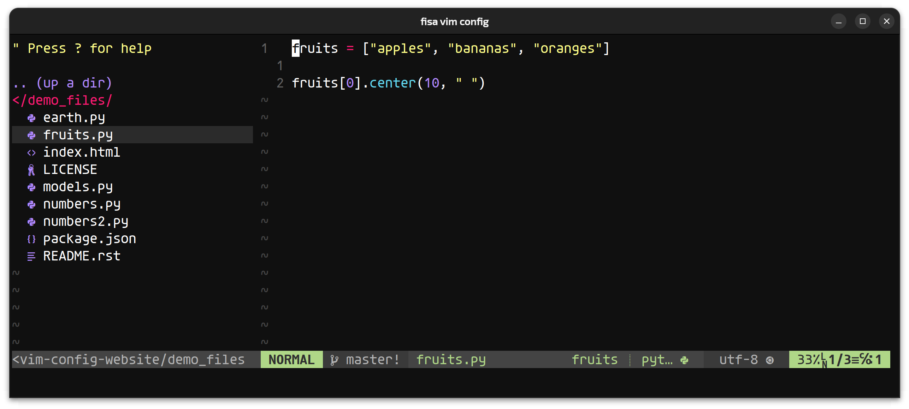

This is my personal Vim and NeoVim configuration, built according to my personal preferences, without any justification to think it's the best possible vim configuration. If you like it, great! :) It's mainly oriented to python software development, but many of its features are useful for other languages and editing tasks.
Some of the best features (full list and basic help here):
Install for Vim | Install for NeoVim | Upgrade
0) You will need Vim 8.0 or newer, and compiled with python support
(check for python support with vim --version | grep +python).
Also, your .vim folder should be empty.
If you have one, rename it or move to a different location (to keep a backup, just in case you want to go back).
1) Install the required dependencies:
sudo apt install git curl python3-pip exuberant-ctags ack-grep sudo pip3 install pynvim flake8 pylint isort
2) Download the config file
and save it as ~/.vimrc (super important to use that exact name).
3) Open Vim and it will continue the installation by itself. Wait for it to finish... and done! You now have your new shiny powerful Vim :)
0) You will need NeoVim 0.3 or newer. For Ubuntu I recommend installing it using the app.image version, which can be downloaded here.
More info and alternative methods here.
Also, your .config/nvim folder should be empty.
If you have one, rename it or move to a different location (to keep a backup, just in case you want to go back).
1) Install the required dependencies:
sudo apt install git curl python3-pip exuberant-ctags ack-grep sudo pip3 install pynvim flake8 pylint isort
2) Download the config file
and save it as ~/.config/nvim/init.vim (super important to use that exact path and name).
3) Open NeoVim and it will continue the installation by itself. Wait for it to finish... and done! You now have your new shiny powerful NeoVim :)
If you have an older version of fisa-vim-config and want to upgrade it to the latest release, follow these steps:
1) Dowload the new version of the config file and replace the old one you have.
2) Install the dependencies listed in the install section.
3) Open Vim or NeoVim and run:
:PlugClean :PlugInstall :PlugUpdate
This will remove plugins no longer used, install any new plugins, and update the existing ones to the last versions. It can be useful to look at the changelog.
Optional: Fancy Symbols
You can either have a plain old terminal editor using old boring characters...

...or you can have an awesome terminal editor able to show all kinds of fancy symbols in the file explorer and the status bar in the bottom:

You only need to install any font from NerdFonts,
and then enable the fancy_symbols_enabled setting at the beginning of the config
(change the 0 to 1). Restart the editor to see the change.
Features and help
TBD